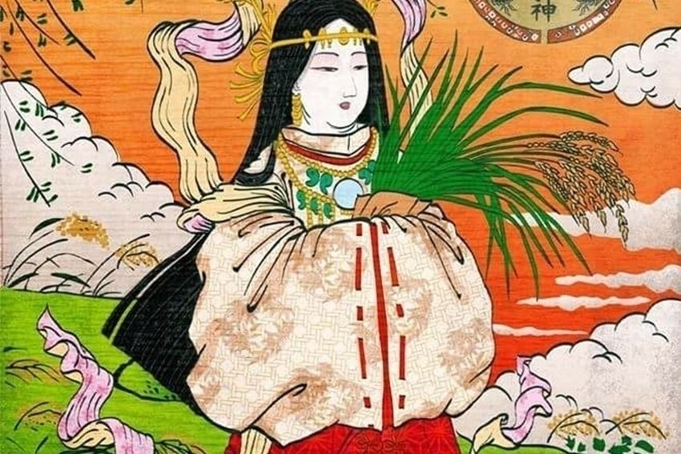

╱╳╲ 几卂Ꮆ卂丂卂Ҝ丨 ╱╳╲
╱╳╲ 几卂Ꮆ卂丂卂Ҝ丨 ╱╳╲𓆩༢࿔ྀુ¿Quiénes somos?𓆩༢࿔ྀુ
➜Nuestro restaurante "Nagasaki", cuenta con mas de 50 años sirviendo comida china, en honor a: Uke-Mochi-No-Kami (保食神 en Japonés), también llamada Ogetsu-hime-no-kami u Ogetsu-no-hime, quien es la diosa sintoista japonesa de la fertilidad y los alimentos creadora de la flora y la fauna, proveedora a través de la muerte de las sustancias vitales. Su nombre significa: "el Genio de la Comida", un pequeño tributo a esta diosa tan singular.

Nuestra tematica se basa en personajes iconicos del anime, para llamar la atencion de nuestros clientes, quienes se sienten atraidos y comodos por este estilo de "arte", ademas de fusionarla con la cultura general de japon. Creando un ambiente agradable para nuestros clientes.Nos enorgullese anuciar que proximamente se celebrar el aniversario. Acude a nuestras sucursales y porfavor acompananos a celebrar este gran diacon nosotros.